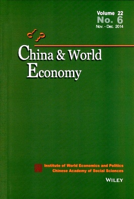
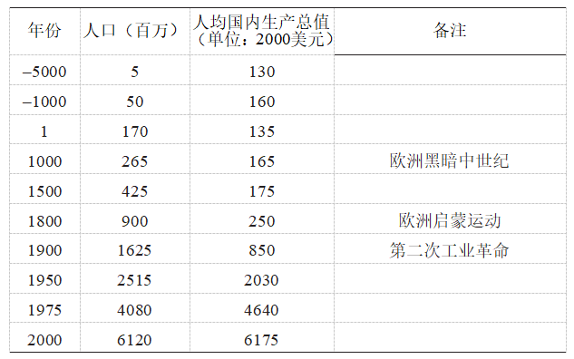
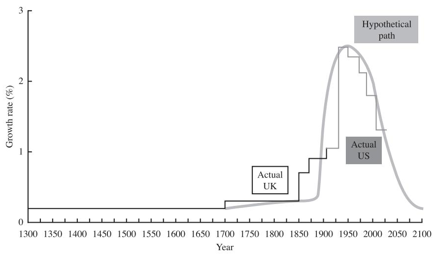
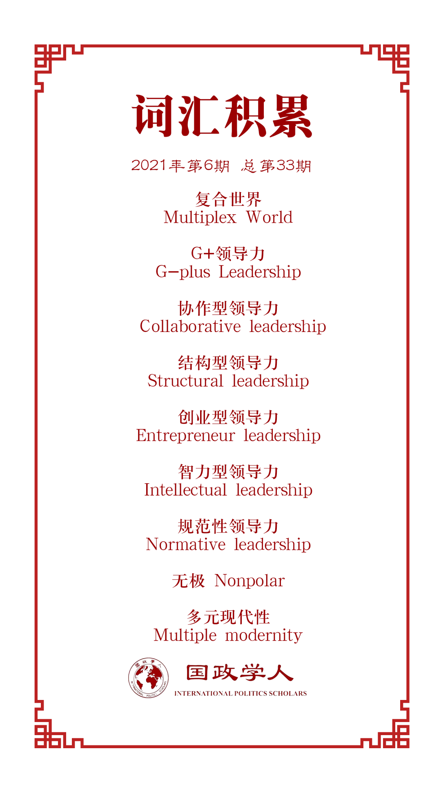

收录于合集

作品简介
【作者】 阿米塔·阿查亚（Amitav Acharya），印度裔加拿大学者，美利坚大学国际事务学院教授，世界知名国际问题专家，主要研究领域包括东南亚研究、多边主义和全球治理、安全研究和国际关系理论等；
安东尼·埃斯特瓦多道尔（Antoni Estevadeordal），美洲开发银行一体化和贸易部门经理，布鲁金斯学会非常驻高级研究员，主要研究领域为拉美、亚太和欧洲地区的贸易政策、经济一体化和区域合作；
路易斯·古德曼（Louis W. Goodman），美利坚大学国际服务学院教授兼名誉院长，主要研究领域为拉美和亚洲的社会变革和政治发展。
【编译】 房宇馨（国政学人编译员，北京外国语大学国际关系学院）
【校对】 江若婵
【审核】 胡瑞琨
【排版】 石寒冰
【美编 】方引弓
【来源】 Acharya, A., Estevadeordal, A., & Goodman, L. W. (2019). Reshaping global order in the 21st century: g-plus leadership in a multiplex world. China & World Economy, 27(5), 63-78.
【归档】 《国际关系前沿》2021年第6期，总第33期。
期刊简介

《中国与世界经济》（英文版） China & World Economy 是由中国社会科学院主管、世界经济与政治研究所主办的学术期刊，创刊于1993年，是国内创刊最早的经济类英文学术刊物。该期刊致力于推动国际国内学术界开展与中国经济相关的研究及其与世界经济的互动。根据《中国学术期刊（光盘版）》（中国知网）最新发布的中国学术期刊国际引证年报的数据，China & World Economy荣获“2019中国最具国际影响力学术期刊”的称号，名列人文社会科学类第二名。
**【全球秩序】阿米塔·阿查亚等：重塑21世纪的全球秩序：复合世界中的G+领导力
**
Reshaping Global Order in the 21st Century: G-Plus Leadership in a Multiplex World
Amitav Acharya
Antoni Estevadeordal
Louis W. Goodman
内容提要
本文认为，只有以协作型领导力（collaborative leadership）替代霸权型领导力（hegemonic leadership）才能维持全球的和平、繁荣和正义，因为协作型领导力能够增加拥有有效发言权的行为体的数量。本文将不断演变的世界秩序称为复合世界（multiplex world），因为其间相关行动体的利益相互交叉但又有所区分。另外，作者又提出了“G+”（G-plus）的概念，用以强调复合世界中多元行为体的不断增加。本文试图回答复合G+世界的形成对维持经济增长和协调全球贸易的意义。
文章导读
01
前言
尽管2008年后全球化进程放缓，但国际关系和全球秩序的飞速变革从未停滞。关于未来全球秩序的判断，国际关系学界出现了日益扩大的分歧。伊肯伯里等理论家起初认为美国主导的自由主义国际秩序将长久存续，但现今却不得不承认这种国际秩序正在遭受严重的削弱，而阿查亚和基辛格等人则早已预见自由秩序将面临深度衰退的危机。哈斯和布莱默等美国学者认为，世界正在日益变得无序，伴随着传统“G集团”（如77国集团、20国集团、8国集团和7国集团）的分化，全球将走向一个无领导者的“碎片化”时代，过去75年所形成的全球领导模式将不复存在。同时，利珀和卡根则担忧美国领导地位下降可能会对和平与繁荣造成巨大伤损。2005年，中国哲学家赵汀阳出版《天下体系》一书，重新阐释了“天下”的概念，并指出中国在世界上的重要性与日俱增，中国所倡导的国际秩序观将与现今美国主导下的国际秩序有所不同。2001年，阎学通教授通过研究中国崛起对本国和世界的影响，提出中国需要制定出使国内外皆可信服的政策，才能有效地实现全球领导。
本文的三位作者则从其他角度对当代全球领导力进行了分析。埃斯特瓦多道尔和古德曼强调，公共产品的可获得性对于实现可持续发展及和谐的国际关系至关重要。在《美国世界秩序的终结》一书中，阿查亚将当今世界称为“复合世界”，用以形容各国国家利益相异却又部分交叉的状态。从合作生产公共产品到复合协作型领导力，三位作者提出的思考角度对于吸纳更多行为体来协调应对全球性挑战而言极有助益。
02
维持经济增长
影响上述全球领导力愿景的关键因素是世界经济能否继续维持目前的增长态势。 如表1所示，过去的7000年中，虽然世界经济和人口都实现了显著增长，但增长趋势并不持续和稳定。联合国经济与社会事务部2019年发布的人口报告显示，由于家庭生育意愿的降低，未来每名发达国家的妇女将平均只生育2.1个孩子，而世界人口将于2050年增长至97亿后在本世纪末达到110亿的峰值。
表1 从公元前5000年到公元2000年以来的经济和人口增长

那么经济增速能否与人口增速保持同频甚至实现超越呢？英国人口学家托马斯·马尔萨斯1798年发表的《人口论》和清代学者洪亮吉1793写就的《治平篇》都曾发出警示，人口增长过快可能会遏制经济的持续发展，对政治和社会稳定也会造成负面影响。尽管18世纪欧洲和中国空前的人口增长确实引发了政治动荡，但二人的悲观预言并未完全成为现实。 自19世纪中叶以来，技术的发展和社会政治的创新大大缓和了人口过快增长对经济发展可能造成的负面影响，并且引发了全球的新一轮人口转型 ——人类的死亡率和生育率普遍下降，同时人均寿命在不断延长。美国经济学家罗伯特·戈登在《美国增长的起落》一书中，将伴随着人口变革而实现的经济增长归因于蒸汽机、电力等一系列的“伟大发明”的出现。戈登认为， 技术的发展与社会政治上的创新密切相关 ，如推翻君主政体后建立的自由政府和社会主义政府、依靠殖民掠夺所完成的资本积累以及随后兴起的自由主义国际秩序。在此后的一百年中，这些新技术以前所未有的方式深刻影响着全球经济的运转，以其所带来的惊人社会生产力为人类未来经济的发展创造了巨大的想象空间。然而，戈登也重申了马尔萨斯和洪亮吉的观点，认为这些“伟大发明”即将耗尽其带动经济持续增长的潜力。戈登通过追踪世界主要经济体（1700年—1920年的英国和1920年以来的美国）的实际人均GDP增长，预测21世纪的人均GDP将急剧下降（如图1）。

图1 实际人均GDP增长的预测走向（1300年至2100年）
图中所呈现的模式是否会在未来将成为一种必然，这在政界和学术界都存在着巨大争议。在2016年的美国总统大选中，特朗普提出，可以通过取消经济法规和减少税收（特别是公司税）来规避这种模式的出现。特朗普总统任期内的经济增长确实高于戈登的预期，但这种增长是可持续性增长，还是由减税引起的“暂时性回暖”，目前仍有争议。
学界甚少关注全球领导力模式的演变会如何以维持经济增长为目的而推动社会政治走向创新。过去，国家能力的提高以及民主政体的形成，提升了人类的整理人力资本水平和生活水平，进一步推动了新技术转化为实际生产力。而在东亚等地区，有效的国家治理和严苛的官员审查制度成为了促进地区国家（特别是新加坡）经济发展的关键因素。然而，对于其他欠发达国家，尽管经济获得了显著发展，却依然无法填补与发达国家之间的差距。并且，由于缺乏基础设施、人力资本、政治稳定等发展要素，欠发达国家的这种经济增长可能根本无法实现可持续，经济增长将逐渐停滞，无法跳脱出“中等收入陷阱”以及普雷维什“贸易条件恶化论”的魔咒。因此， 随着21世纪全球秩序的重塑，社会政治也需不断创新，以缩小欠发达国家与发达国家之间的差距。
为保持全球经济增长、保障各国维持良好运转和重塑世界秩序，有两种社会政治创新尤为重要：优化地区（贸易）一体化和发展协作型复合G+领导力。
03
区域贸易协调
根据世界贸易组织公布的数据，2017年全球贸易增长与GDP增长之比为1.5，大大高于2008年金融危机后的1.0，已接近历史平均水平。这凸显出 贸易对全球经济增长和世界秩序重塑的重要作用 。
当前的国际贸易体现出了新的特点：发展中国家在全球出口贸易和外资引进中所占的份额正在增加，现已接近发达国家的总体比例。在这种情况下，南南贸易（South- South trade）在全球出口贸易中的份额也在不断增加。另外，3D打印、物联网和区块链数据存储等新技术的发展将大大缩短全球价值链，并将持续降低跨境交易成本。同时，全球贸易格局也将伴随着气候变化等问题的恶化和中国“一带一路”倡议等方案的提出而走向变革。即便如此，发达国家依然是全球价值链附加值的最大受益者。
在这样动态变化的贸易背景下，需要制定新的贸易条例，以便将新技术、新运输方式、电子商务、数据流和新服务的影响纳入考虑范畴。这将对全球各国的贸易发展提供便利，尤其将有利于发展中国家逐步优化其贸易结构，同时，也将在全球贸易摩擦不断加深的背景下，促进世贸组织向更加务实的多边主义方向演变。这种务实的多边主义与当前日益重要的贸易区域化是相辅相成的，非洲、亚洲和拉丁美洲的区域发展便是实证。
作为21世纪的一大关键挑战，全球贸易协调需要建设一个以协作型复合G+领导力为基础的治理架构，以适应第四次技术革命对全球竞争力的影响以及全球贸易和投资格局的结构性转变。 这种新的治理架构必须将优化全球贸易规则的“务实多边主义”路径与基于跨大陆G+领导力的系统性区域主义路径结合起来。
04
复合G+领导力
当前的新兴世界秩序与二战前的多极格局是截然不同的 ，因为当今国际政治中的关键行为体不仅仅包括大国及新兴国家，还包括了国际组织、跨国公司等非国家行为体。二战前， 欧洲各国间依靠贸易维系的相互依赖相对脆弱 ，极易被王朝冲突、均势政治和海外殖民地的血腥竞争所削弱。 而当今世界各国间的相互依赖形式更为多元 ，包括贸易、金融、生产网络以及共同遭受的恐怖主义和气候变化等跨国性危机的挑战。
新兴世界秩序也不同于传统的多边主义。传统的多边主义包括以下三大特征：（1）由西方（特别是美国）主导；（2）提供发展援助时会附加民主和人权等政治条件，甚至意图在受援国进行政权颠覆；（3）西方大国以双重标准对待受援国，亲西方国家往往能获取更多利益。
因此，这种由新兴大国促成的 新多边主义，将不再以西方世界为中心，不再附加不合理的政治条件，并且将对意识形态多元的受援国更加包容。 这种新兴的世界秩序可以被描述为一个 “复合世界” ，其主要特征包括：（1）尽管权力不平等和等级制无法消除［理查德·哈斯提出的“无极”（nonpolar）概念，以及托马斯·弗里德曼“世界是平的”的说法，都具有误导性］，但 复合世界中不存在单一的全球霸权国 ；（2）复合世界中的行为体不仅包括大国，还包括 国际和地区组织、非国家团体、公司和公民网络 ；（3）尽管全球化深入发展，但 复合世界依然能够保持文化、意识形态和政治的多样性 ；（4）日益提升的全球和区域相互依赖不仅涵盖了贸易领域，还同时涉及经济和生态的联系；（5）全球、区域和本土层面的多层次治理包括正式制度、网络和混合结构。安全挑战愈发具有跨国性，需要进行跨国协调加以应对。
复合世界不存在单一霸权国并不一定意味着美国正在衰落，但可以肯定的是，美国已经无法像二战后那样主导规则的制定和掌控全球治理机构。 复合世界将出现多层次的权威和领导力，地区及地区性大国和组织的作用尤其重要。 但这并不代表19世纪欧洲区域性集团的回归，因为现今的区域主义多属开放型区域主义（如亚洲）或区域间主义（如欧洲），不再过于强调领土的界限，而更为注重行为体和议题的多元化。
新兴大国在实现复合世界以及G+领导力上发挥了关键作用： （1）抵制西方世界的主导地位，特别是布雷顿森林机构等多边机构的主导地位。例如，巴西、俄罗斯、印度、中国和南非（金砖四国）通过改革国际货币基金组织（IMF）等机构获得了更多投票权，以寻求更大的公平公正。（2）建立新机构，以补充或取代现有的多边机构。例如，中国已在亚洲基础设施投资银行、金砖国家新开发银行和金砖国家应急储备安排中发挥着主导作用。（3）针对本国实际情况制定新的可持续发展理念并建立相应的治理机构，为其他发展中国家摆脱贫困和中等收入陷阱提供参照，更可成为西方发展和治理模式的替代方案。
随着这一新世界秩序的演变，美国的全球霸权不太可能回归。尽管特朗普承诺“让美国再次伟大”，但他无法扭转美国主导的自由主义国际秩序衰落的颓势。相反，他所采取的贸易、退群和移民政策甚至加速了自由主义国际秩序的崩溃。
尽管特朗普领导下的美国可能会破坏自由主义国际秩序，但不太可能逆转全球化进程，因为中国和印度会继续支持全球化的推进。我们看到的不是全球化的“终结”，而是向一种新的全球化形式过渡。 新的全球化将更多地由东方世界而非西方世界主导，更多地由中国和印度等新兴大国而非守成大国主导，更多地加强南南国家之间的联系而非南北联系。 在未来的全球化进程中，南南贸易和投资可能会占据显著位置。根据联合国贸易和发展会议提供的数据，南南国家间的直接投资额占全球投资总额的1/3以上。这与过去相比是一个明显的转变。
新的全球化也不像以往由西方主导的全球化那般强调意识形态上的区分，而将更为尊重国家主权。 除国际货币基金组织、世界银行和世贸组织等传统多边经济机构之外，未来的全球化将更多地由新的多边机构驱动，如亚洲基础设施投资银行、安第斯开发银行、金砖国家新开发银行等。在一个复合世界中，全球治理将出现碎片化的趋势。换言之，一系列彼此独立又相互交叉的私营部门发展倡议、民间社会运动、公私伙伴关系以及各种全球、诸边和区域机构之间相互形成了复杂的联结，使战后大型多边机构的重要性不断下降。
复合世界中的新全球化将需要一种新的领导形式，传统的全球领导形式正受到挑战。我们正在进入一个G+世界，全球治理将更多地依赖于G20等机构以及国家、国际组织、社会运动、公司及基金会等共同构成的混合平台。 G+领导力是指，不同行为体（国家、国际机构、公司、民间社会、个人）在多重层次（全球、区域、国家和本土）上可针对不同议题行使一般性领导力，并且，没有任何行为体能够在所有议题领域或所有层次上均占据主导地位。
奥兰·扬认为，国际领导力可分为三类：结构型、创业型和智力型。结构型领导力（structural leadership）可将权力资源转化为制度谈判的讨价还价能力；创业型领导力（entrepreneur leadership）能够依靠谈判技能来达成各方都可接受的解决方案并协调关键参与者的利益、智力型领导力（intellectual leadership）能够依靠观念的力量来塑造其他谈判参与方的认知。
除此之外，还可增加第四种类型： 规范性领导力或道德领导力（normative or moral leadership）。 这种领导力类型更为注重“观念”的作用，不仅指用于讨价还价的因果观念，也指原则性观念。同时，规范性领导人会以身作则，设定明确的标准和目标，并通过动员社会手段（对话、制度、运动）来实现这些目标。这种规范性领导力不同于约瑟夫·奈提出的“软实力”概念。“软实力”是指一个国家能够工具性地利用其资源、文化和理念去获取自己想要的东西。依靠“软实力”所获取到的回报主要对本国有利，但并非一定符合他国的意愿或利益。“软实力”强调的是获取利益的手段，而规范性领导力或道德领导力则同时强调目的及手段。这种领导力类型都有某种感情色彩，并不是一种纯粹的工具。
概括来说，G+领导力的理念可进行以下解读：
（1）领导力并不等同于权力。 权力对于创建和维系国际秩序而言十分重要，但这并不意味着只有超级大国或大国才能在国际社会中发挥领导力。 比如，作为中等强国，澳大利亚、加拿大、北欧五国以及二战后的日本在不同领域都具有不可忽视的国际领导力。在东南亚，印度尼西亚虽不算是头号经济或军事大国，但却被公认为东盟的“领头羊”。因此， 合法性和政治意愿也是构成领导力的重要因素。
（2）要了解当今世界的领导力或权力，全球和区域这两大层面都不应忽视。许多国家在区域层面能够发挥有效的领导作用，如东盟的印度尼西亚、非洲的南非、尼日利亚以及中东的土耳其。
（3） 领导力的判断还需要聚焦于具体的议题领域。 很少有国家能在所有议题领域都处于主导地位。比如，在安全、气候和对外援助领域，美欧中三方分别处于领先地位。在冷战期间，埃及、印度、印度尼西亚和南斯拉夫则通过不结盟运动影响着发展中国家外交政策的制定。
（4）领导力具有多种形式：物质（硬实力和资源）、智力（软实力和理念）和创业（外交和谈判）。
（5）国家和非国家行为体可以通过跨国性社会运动等方式发挥领导作用。 在新兴的复合世界中，越来越多的领导力组合或混合领导形式正在出现。
21世纪，国际形势的新变化对G+领导力的构建极为有利：
（1）一个大国独揽全球霸权的局面正在走向终结。
（2）世界并没有回归到19世纪的“多极格局”，而是在经济上更加相互依赖，在文化和政治上变得日益多元化。
（3）行为体的种类更为丰富，并且守成大国、复兴大国、新兴大国并立。相较于西方大国，复兴大国与新兴大国的影响力将持续上升。
（4）区域、区域主义和区域秩序的重要性日益增强，折射出传统西方霸权和美国单极世界的瓦解。
（5）国家间的相互依赖不再局限于贸易领域，还涉及投资、生产网络、供应链、安全问题以及共同面临的跨国性挑战，变得日益多样化和全球化。
（6）随着由全球、区域、国家和次国家（如城市）组成的多层次治理结构的出现，全球治理日益多元化。
（7）我们所处的是一个具有多元现代性（multiple modernities）的世界，一个具有文化、思想和政治多样性的世界。在这样一个世界中，人类为最终实现稳定、和平与繁荣，贡献着各种不同理念与观点。
05
结论
世界经济变革将如何影响未来的国际秩序？区域及其他层面的深层次合作能否使未来秩序更加稳定、繁荣、公正？另外，不断变化的世界秩序是否将纵容无政府势力的崛起，加剧政治混乱和不公正？回答这些问题的关键是构架一种新的全球领导类型：复合G+领导力。
实现全球和平、繁荣与正义的最佳途径是建立一种协作体系来使更多行为体发挥领导力，而摆脱由美国及其盟国主导话语权的现状。这并不是说，在复合G+体系中，美国不再拥有强大的话语权。在这一体系之下，没有任何的全球行为体拥有完全相同的利益，所以，相互包容彼此间的多样性将成为这一体系的重要特征之一。此外，G+体系是一种开放性的体系，允许不同行为体的共同参与，这将增强体系的稳定性和公平性。因此， G+中的“+”既表示复合世界中行为体数量的增加，也表示这种国际秩序安排所具备的多重优势。
译者评述
新冠疫情的暴发凸显出一大现实，即在应对全球性威胁时，有效的治理胜于任何的物质力量上的优势。作为世界上唯一的超级大国，美国虽然拥有强大的经济和军事实力，却无力管控疫情的肆虐。这场公共卫生危机严重削弱了美国在全球的公信力和特朗普政府在美国国内的公信力，更为美国领导下的自由主义霸权秩序走向终结再添明证。
从目前的成效来看，中国大陆以及韩国、越南、新加坡等国家及地区在疫情防控过程中展现出了较高的治理水平和治理能力，在全球和地区公共卫生治理中扮演了重要的领导者角色，这在很大程度上与本文作者提出的以议题为导向的“G+领导力”理念是相契合的。同时，正如斯蒂芬·沃尔特所预测的，新冠疫情“将加速东西方权力和世界影响力的转移”。过渡到后疫情时代，美国领导力的衰落与中国等新兴大国的加速崛起将推动世界秩序走向多元，或者说，形成阿米塔·阿查亚所谓的“复合世界”。自由国际秩序的大厦正摇摇欲坠，新兴国家将会重塑后美国时代的世界秩序。
但正如作者在文中所强调的，“复合世界”不是美国主导的单极世界，不是中美对峙的两极世界，也不是多强并立的多极世界，而是由多元行为体共同发挥领导力的“复合G+”世界，共享领导权将会成为“复合世界”中全球治理的关键特征。这一理念的提出也同时驳斥了中美共治的“G2”模式、中美欧三方互动的“G3”模式以及伊恩·布雷默的“G0”模式【译者注：布雷默认为，美国的国际领导力将受到国内政治议程的限制，但欧盟、中国等经济体又无法完全取代美国在提供全球公共物品上的领导地位，所以未来世界将进入一个无领导者的“G0”时代】。阿查亚曾将“复合G+世界”比喻为“多厅影院（multiplex cinema）”，即在同一时间段，一个影院的不同剧场可以放映不同的电影。这意味着，在这种去中心化的领导力模式之下，国际社会中的观众可以选择不同场次的电影——国际治理舞台不再专属于主要大国，各种全球、地区、国家以及非国家行为体都可行使领导权。同时，复合G+世界也可以在一定程度上避免“G0”模式可能导致的治理混乱局面，通过新兴大国、守成大国以及区域和民间社会团体的共同领导而实现稳定。
本文最有价值的学理创新之处在于提出了“复合世界”和“G+领导权”以取代传统的自由世界秩序和多极世界的概念，对分析未来国际秩序的走向提供了重要参考，并且与作者长期探究的非西方中心主义国际关系理论体系是一以贯之的。但问题在于，文章三大部分的论述相对独立，对于“维持经济增长”、“区域贸易协调”与“G+领导力”之间逻辑关系的论证不够清晰，缺乏说服力。
词汇整理

文章观点不代表本平台观点，本平台评译分享的文章均出于专业学习之用, 不以任何盈利为目的，内容主要呈现对原文的介绍，原文内容请通过各高校购买的数据库自行下载。
好好学习，天天“在看”